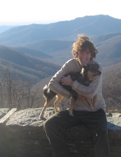
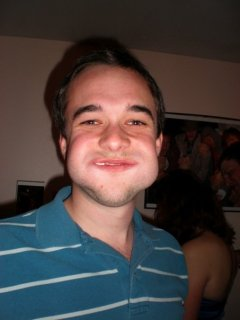
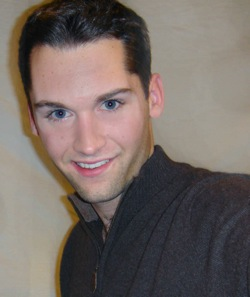

The Stylish Gentlemen of the SPA
Jonas Ketterle
Jonas Ketterle is a Masters student in Mechanical Engineering at Stanford University, where he is pursuing concentrations in mechatronics, heat transfer, and fluid dynamics. He is interested in bringing basic services such as electricity and clean water to the world's poorest one billion.
Ruddick Lawrence
Ruddick is a first-year coterm in Mechanical Engineering, which means he's spent his whole undergraduate career around Terman. This quarter, however, takes the cake for time spent in a lab. His concentration is mechatronics and robotics, and he dabbles in web design every now and again.
Graham Doorley
Graham attended Carnegie Mellon University where he received a B.S. in Physics and a B.S. in Materials Science & Engineering. After working for two years at Lockheed Martin Space Systems he is now pursuing his maters in Mechanical Engineering at Stanford. He spends most of his time working on, rebuilding, restoring, washing or racing cars. If it has an engine on it odds are he has tried to race it!